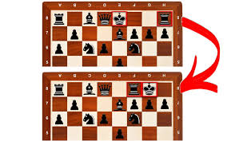
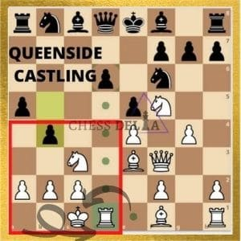

Introduction to Castling
Castling is a unique move in chess that allows players to improve king safety while also activating a rook. It is the only move where a player moves two pieces simultaneously – the king and a rook. Castling is essential for protecting the king and often plays a vital role in chess strategy.

Rules for Castling
For castling to be legal, specific conditions must be met:
- The King and Rook Must Not Have Moved: Neither the king nor the chosen rook should have moved at any point during the game.
- No Pieces Between the King and Rook: The squares between the king and rook must be empty.
- The King Cannot be in or Move Through Check: The king cannot castle if it is in check or if it would have to move through a square that is under attack.
Types of Castling
There are two types of castling in chess:
-
Kingside Castling (Short Castling)
This occurs when the king castles towards the kingside (the side of the board where the king originally starts the game). In kingside castling, the king moves two squares towards the rook on its right, and the rook jumps over the king to the square next to it.
 -
Queenside Castling (Long Castling)
In queenside castling, the king moves two squares towards the rook on its left (the queenside), and the rook moves to the square right next to the king on its other side. This often takes longer to prepare because more pieces are usually in the way on the queenside.

Benefits of Castling
- Improved King Safety: Castling positions the king behind a wall of pawns, making it harder for the opponent to attack.
- Rook Activation: Castling brings a rook closer to the center, increasing its range and influence on the board.
- Flexibility for Future Moves: Castling early can allow other pieces to develop safely and provide a secure environment for planning future strategies.
When to Castle
It's generally advisable to castle within the first ten moves of a game unless there’s a strong reason not to. Delaying castling may leave the king vulnerable to attacks, especially if the center opens up. However, avoid castling if it places the king in danger or if castling on the other side of the board is safer.
Common Mistakes in Castling
These are typical mistakes players make when castling:
- Castling Too Late: Waiting too long to castle can expose the king to threats as the game progresses and more pieces become active.
- Ignoring Opponent’s Pieces: Not checking if castling will place the king in danger from the opponent’s active pieces.
- Castling Into Danger: Sometimes, players will castle to a side that’s already under attack. Always consider the opponent’s positioning before castling.